Na figura, a área da região hachurada mede, em unidades de área:
|
|
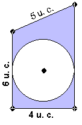 |
Resolução:
Inicialmente indiquemos os vértices do trapézio:
|
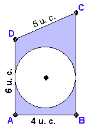 |
Observe que a área pintada é a área do trapézio ABCD menos a área do círculo:
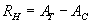 I |
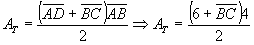
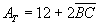
IIVamos encontrar o valor de BC:
tracemos um reta perpendicular ao lado AD passando pelo vértice D, esta perpendicular intercepta o lado BC em E:
|
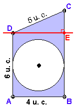 |
Observe que: BE // AD Þ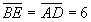 e 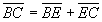 logo: 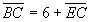 III |
Pelo teorema de Pitágoras:
|
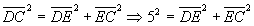 IV |
Mas: DE // AB Þ
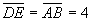
Substituindo na equação IV :
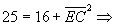
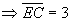
Substituindo na equação III :
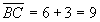
Substituindo na equação II :
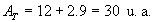
Agora achemos o valor da área do círculo:
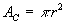
Considere um raio do círculo cujas extremidades são o centro do círculo e um ponto de tangência entre o círculo e o trapézio (observe que neste caso existem apenas dois pontos nesta condição):
|
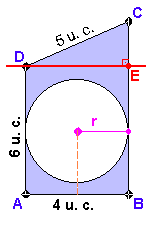 |
Pela figura ao lado, notamos que: r // AB e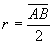 daí: 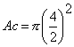 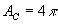 |
Finalmente, substituindo os valores de Ac e AT na equação I:
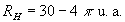
que é a área da região pintada.
Nota